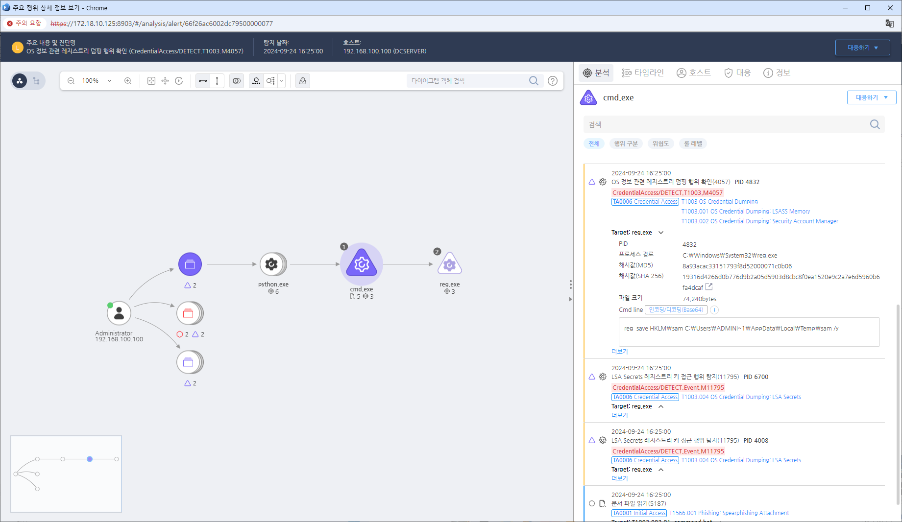

T1003.002.01 레지스트리 하이브 복사
D3FEND
MITRE ATT&CK 액션을 기준으로 대응 방안을 작성
Detection
CurrentProcess = "reg.exe" AND
Cmdline = "save" AND
Cmdline = "HKLM\SYSTEM" OR "HKLM\security"
Detection(EDR)

Response
- 모니터링: Task Manager, ProcDump, Mimikatz 등 LSASS 메모리에 접근하는 비정상적인 프로세스를 탐지한다. 비관리자 사용자에 의해 발생하는 대용량 파일 접근을 확인한다.
- 엔드포인트 보호: LSASS 메모리 덤프나 LSASS에 접근하려는 프로세스를 탐지하는 엔드포인트 탐지 및 대응(EDR) 솔루션을 사용한다.
- 권한 관리: 관리자 권한 사용을 정기적으로 감사하고, 비정상적이거나 허가되지 않은 메모리 덤프 활동을 수행하는 계정을 모니터링한다.
- 메모리 분석: 메모리 덤프에 대한 포렌식 분석을 수행하여 자격 증명 탈취 여부를 식별한다.
- 네트워크 활동: 자격 증명 탈취를 나타낼 수 있는 네트워크 트래픽 또는 자격 증명 데이터를 다른 위치로 이동하는 것을 모니터링한다.
Mitigations
자격 증명 보호
- Windows의 Credential Guard 및 LSASS 보호 모드를 활성화하여 패스워드 덤핑을 방지합니다.
- SAM, SYSTEM, SECURITY 레지스트리에 대한 접근을 제한합니다.
보안 솔루션 강화
- EDR/XDR 솔루션을 사용하여
mimikatz, procdump 등의 크리덴셜 덤핑 도구 실행을 탐지합니다.
- Microsoft Defender의 Attack Surface Reduction (ASR) 정책을 적용하여
lsass.exe 접근을 차단합니다.
이벤트 로깅 및 감사 정책 강화
- Sysmon을 활용하여 Event ID 10 (ProcessAccess) 를 모니터링하고 LSASS 접근 시 경고를 생성합니다.
- Windows Event Log (
4624, 4672, 4688)를 분석하여 비정상적인 관리자 권한 요청을 탐지합니다.
권한 제어
- 로컬 관리자 계정을 최소화하고 JIT(Just-In-Time) 및 JEA(Just Enough Administration)를 적용합니다.
- RDP 및 원격 접근을 제한하고 네트워크 레벨 인증(NLA)을 활성화합니다.
레지스트리 및 시스템 설정 보호
- NTLM 인증을 비활성화하고 Kerberos 인증을 기본값으로 설정합니다.
mstsc /restrictedadmin 설정을 활성화하여 원격 로그인 시 크리덴셜 유출을 방지합니다.
네트워크 트래픽 모니터링
- SMB 및 RDP 연결을 감시하여 의심스러운 인증 시도를 탐지합니다.
- SIEM에서
sam, security, system 등의 키워드로 로그 분석을 수행하여 비정상적인 접근을 탐지합니다.
Affected Techniques
Action 실행시 함께 영향을 받는 다른 Techniqes
| ATT&CK |
| T1003.002 |
| T1059.003 |
| D3FEND |
| D3-FIM File Integrity Monitoring |
| D3-PLA Process Lineage Analysis |
| D3-PM Platform Monitoring |